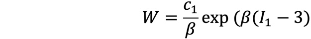

Estimating the biomechanical properties of the cornea and ciliary body
In this study we used the velocity of shear waves propagating through the cornea and ciliary body, measured using ultrasound elasography, to characterize the hyperelastic behavior of the tissues.
Write more text here.

Figure 1: Ultrasound image of the cornea indicating the directions relevant to the analysis.
Write more text here.

Figure 2: Blatz hyperelastic model used to characterize the cornea and ciliary body.